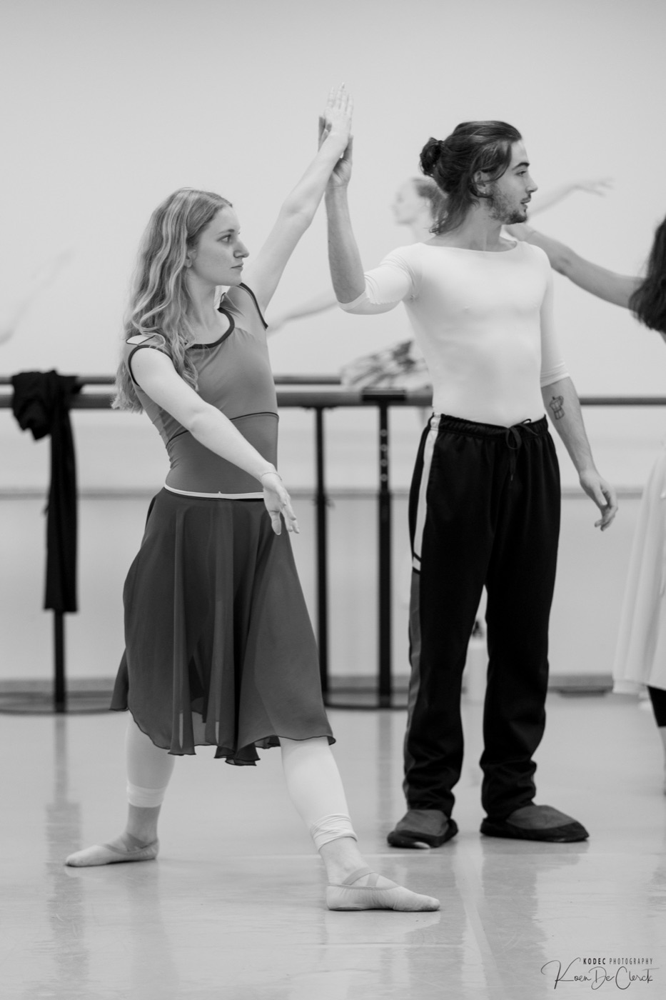
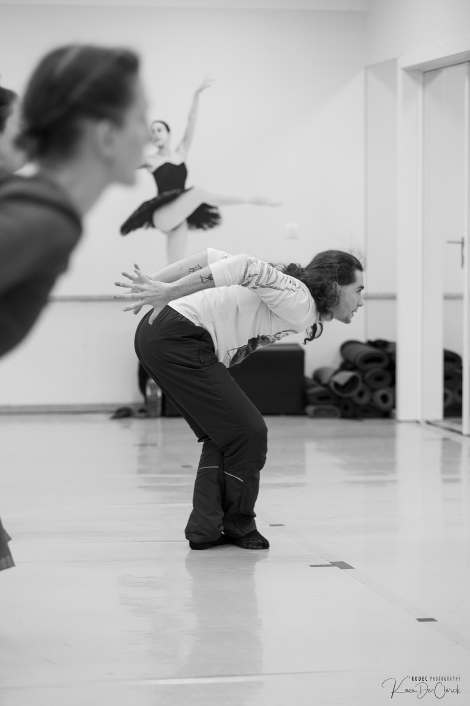

© Koen De Clerck / Kodec Photography
© Koen De Clerck / Kodec Photography
Zomerintensief · 3–5 augustus 2026
© Koen De Clerck / Kodec Photography
Zomerintensief · 3–5 augustus 2026
Het intensief
Twee delen per avond — verfijn je techniek aan de barre en in het midden, en verbind het daarna met hedendaagse beweging terwijl je samen choreografie opbouwt.
Een warming-up geworteld in klassieke training. Barre-oefeningen om je bewegingsbereik te openen, daarna werk in het midden om je eigen bewegingskwaliteit te vinden.
Geaard bewegen via Horton-, Limón- en Cunningham-technieken — samen choreografisch materiaal creëren.
Drie avonden · 3–5 augustus · 19:00–22:00 in Studio Aakash. Balletschoenen voor het klassieke werk, sokken voor het hedendaagse.
Je docent
Een Spaanse danser en choreograaf, gevormd door gerenommeerde Europese gezelschappen. Tono deelt zijn passie voor klassieke en hedendaagse dans met de dansgemeenschap van Gent.
Hij studeerde aan het Real Conservatorio Profesional de Danza Mariemma in Madrid, danste daarna bij Europa Danse in Brussel, het Kroatisch Nationaal Theater Split en het Moravische Theater Olomouc — in producties zoals Giselle, De Notenkraker, La Bayadère en Carmen — en was gastartiest bij het English National Ballet in Christopher Wheeldons Cinderella. Recent danste hij bij het Estse Nationale Theater Vanemuine.
Vandaag werkt hij als freelance docent, danser en choreograaf in heel Europa, en werkt hij samen met gezelschappen en merken zoals Cartier, Luxembourg Ballet en Glen Lambrecht Ballet.


Prijzen
Sluit aan bij één van de drie avonden.
Het volledige intensief — drie avonden klassiek en hedendaags werk.
Beperkt tot 20 dansers. Een Shoonya ID is verplicht om in te schrijven — die maak je in een minuut aan als je er nog geen hebt.
Goed om te weten
3–5 augustus 2026 · Studio Aakash
Schrijf je in via het Shoonya-inschrijfformulier. Kies op het formulier Festivals & Events (niet Workshops & Miniseries), selecteer Classical & Contemporary Summer Intensive, en kies daarna een volledige pas of losse avond. Een Shoonya ID is verplicht — maak die eerst aan als je er nog geen hebt.